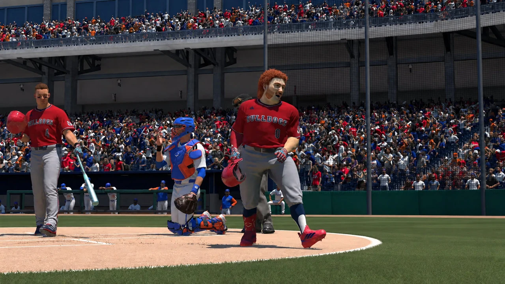

TATER TOT CHRONICLES
A family and baseball archive
The baseball career of Tater Tot McGee, from Sandpoint and Fresno State to the draft, professional debuts and the call to Tacoma.
McGee hits a walk-off double to send Sandpoint to the Idaho 5A State Championship Series against Moscow High. The May 16, 2022 front page celebrates the Bulldogs advancing.

Sandpoint wins the Idaho 5A state championship after a hard-fought series against Moscow High. The May 22, 2022 front page celebrates McGee and the Bulldogs.

The New York Yankees select McGee 27th overall in the 2023 MLB Draft. He chooses college and attends Fresno State, continuing his baseball career with the Bulldogs.
McGee graduates from Fresno State in three years and leads the Bulldogs to a College World Series title in his final season. With college complete, he turns toward professional baseball.

On July 14, 2025, the Seattle Mariners select Tater Tot McGee first overall.

April 2026 · McGee begins his professional career with the Double-A Arkansas Travelers on the road against the Midland RockHounds.
Read PACIFIC Issue 1
June 2026 · After the Arkansas series against Corpus Christi, McGee is told he will join the Tacoma Rainiers. PACIFIC Issue 10 closes his Double-A chapter.
Read PACIFIC Issue 10
McGee begins playing for the Tacoma Rainiers following his call-up. His verified season record through July 26 confirms his Triple-A stint; the exact debut date has not yet been supplied.
View 2026 statisticsAs of July 26, 2026, McGee is with Triple-A Tacoma. Future promotions or call-ups and his MLB debut are pending and will be added to the timeline when confirmed.